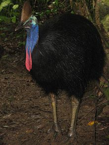
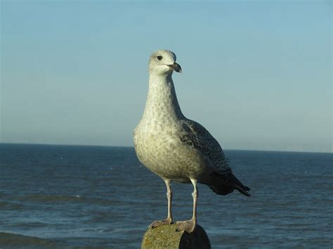
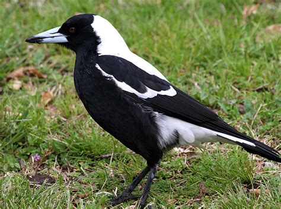
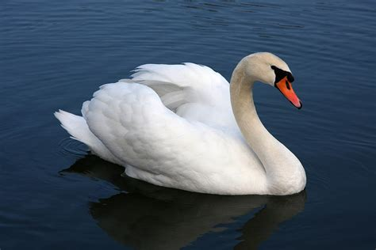

Top 5 most Dangerous birds
Here are top 5 most powerful
1. Southern Cassowary
Southern cassowary is probably the most dangerous living bird in the world. It’s a bird which could definitely cause a fatal attack on humans, just like ostriches. Considering the size, Southern Cassowary is the second largest bird in the world – weigh between 75 – 80 kg and upto 5.1 in height. Like ostriches, the legs are the most powerful weapon of cassowaries.
2. ostrich
The flightless ostrich is the largest living bird on Earth. Native to Africa, ostriches inhabit in savannas, deserts and grasslands across the continent. A fully grown ostrich weigh upto 150 kg and stands 6 feet in height. At a top speed of 43 mph, they are also the fastest bird in the world. But the most important thing you need to know about this powerful bird is with one kick they could kill a human.3. European Herring Gull
Measuring upto 26 inches in length, European herring gull is a large gull found across Western Europe. These gulls are notorious for both stealing food and attack on humans. They have a wingspan of 49 – 61 inches and upto 2.6 long, razor-sharp bills. So, serious injuries are sure from the herring gull attacks.
4. Australian Magpie
Australian magpie is probably is the second most dangerous bird of the country, after Southern Cassowary. This medium-sized bird live in grasslands, fields, parks and gardens across most of Australia. In Spring, when nesting period arrives, Australian magpies becomes very aggressive. This behavior is to protect their nest. If they found you as a threat, they would attack you fearlessly.
5. Mute Swan
The cuteness of mute swans may force you to go near them. But keep in mind that they are aggressive and can pose danger to you. The attack from mute swans on humans mostly happen during their nesting time, in the spring season. Nesting swans defend their zone vigorously.